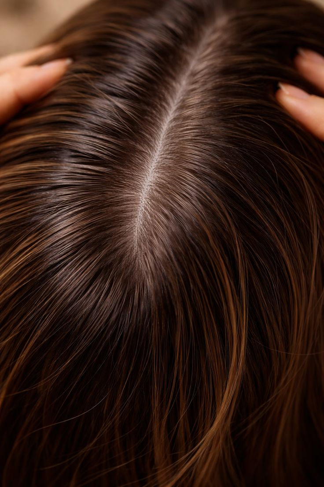

Hair Loss
Hair loss is a common problem that can be treated with the right care and healthy habits.
Causes
- Genetic factors (Hereditary hair loss)
- Stress and anxiety
- Poor nutrition (lack of iron, protein, vitamins)
- Hormonal changes (pregnancy, thyroid problems, PCOS)
- Excessive heat styling (hair dryer, straightener)
- Chemical treatments (dyeing, bleaching)
- Scalp problems (dandruff, infections)
Treatment
- Eating a balanced diet rich in vitamins and protein
- Using hair growth serums
- Medical treatments like Minoxidil (if needed)
- Reducing stress and getting enough sleep
- Treating scalp issues (dandruff or infections)
- Avoiding heat and chemical damage
Best Oils
- Coconut oil → strengthens hair and reduces breakage
- Castor oil → promotes hair growth
- Argan oil → adds shine and moisture
- Rosemary oil → improves blood circulation in the scalp
- Olive oil → nourishes and softens hair
Warnings
- Avoid frequent heat styling tools
- Do not tie hair too tightly
- Avoid harsh chemical treatments
- Do not over-wash hair
- Do not brush wet hair roughly
- Avoid low-quality hair products

After treatment
Back